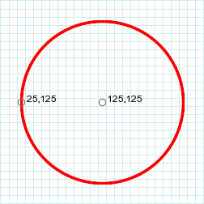

class Draw < Object
Table of Contents
class methods
instance methods
drawing primitive methods
annotate attributes
class methods
new
Draw.new [ { optional parameters
} ] -> draw
Description
Creates a new Draw object.
Arguments
If you plan to use the annotate method with
this object you can initialize the attributes in the associated block.
Returns
A new
Draw object.
Example
gc = Draw.new
instance methods
annotate
draw.annotate(img, width, height, x, y, text) [ { additional parameters } ] ->
self
Description
Annotates a image with text. The text is positioned
according to the gravity attribute around the
rectangle described by the x,
y, width, and
height arguments. If either of the
width or height arguments are 0, uses the image
width-x and the image
height-y to compute the rectangle
width and height. The attributes described in annotate attributes, below, influence the
appearance and position of the text. These attributes may be
set in the Draw object before calling annotate, or
within annotate's optional additional parameters block.
Note: all of the annotate attributes
are set-only.
Arguments
- img
- the image or imagelist to be annotated
- width
- width of the rectangle within which the text is
positioned
- height
- height of the rectangle within which the text is
positioned
- x
- x offset of the rectangle
- y
- y offset of the rectangle
- text
- the text
Returns
self
Example
This example is an excerpt of colors.rb. Many other
examples also use annotate.
title.annotate(montage, 0,0,0,40, 'Named Colors') {
self.font_family = 'Helvetica'
self.fill = 'white'
self.stroke = 'transparent'
self.pointsize = 32
self.font_weight = BoldWeight
self.gravity = NorthGravity
}
Special characters
Escape a blank, quote, or apostrophe by preceding it with a
backslash ("\"). To include a backslash in the text, use two
consecutive backslashes. To include a '%' in the text, use
'%%'. You can include information about the image by including
one or more of the special character sequences shown in this
table.
Special characters
| Replaced by |
|
| %b |
file size in bytes |
| %c |
"comment" property string |
| %d |
directory in which the file resides |
| %e |
filename extension |
| %f |
original filename |
| %g |
group number |
| %h |
height |
| %i |
current filename |
| %k |
number of unique colors |
| %l |
"label" property string |
| %m |
file format |
| %n |
number of images in the sequence (for RMagick, this is
always 1) |
| %o |
output filename |
| %p |
page number (for RMagick, this is always 1) |
| %q |
depth |
| %r |
A string of the form "ClasstypeColorspace," for example
"DirectClassRGB". If the image's matte attribute
is true, appends the word "Matte" to the end
of the string. |
| %s |
scene number (always 1) |
| %t |
filename without extension |
| %u |
unique temporary filename |
| %w |
width |
| %x |
x resolution |
| %y |
y resolution |
| %z |
depth |
See also
This method is also defined in the Image class.
Magick API
AnnotateImage
clone
draw.clone ->
other_draw
Description
Same as dup except the frozen state of
the original is propagated to the copy.
Returns
A new Draw object.
draw
draw.draw(img) -> self
Description
Draws the list of graphic primitives on the specified image.
Calling draw does not affect the list of
primitives. Each time you call draw the primitives
will be re-executed from the beginning.
Arguments
Either an imagelist or a image. If an imagelist, draws on
the current image.
Returns
self
Example
See the other examples on this page.
Magick API
DrawImage
dup
draw.dup ->
other_draw
Description
Duplicate a Draw object.
Returns
An exact copy of the receiver, including the list of drawing
primitives.
See also
clone
get_multiline_type_metrics
draw.get_multiline_type_metrics([image,] string) ->
type_metrics
get_type_metrics
draw.get_type_metrics([image,] string) ->
type_metrics
Description
Returns information for a specific string if rendered on a
image. The get_multiline_type_metrics method is
the same as get_type_metrics, except the former
returns the maximum height and width for multiple lines of
text. (Text lines are separated by "\n" characters.)
The Magick++ documentation for its TypeMetric class provides
this useful additional information. (I've changed it a bit to
use RMagick names.)
The TypeMetric class provides the means to
pass data from the Draw class's get_type_metric method to the
user. It provides information regarding font metrics such as
ascent, descent, text width, text height, and maximum
horizontal advance. The units of these font metrics are in
pixels...(T)he metrics are dependent on the current Image
font (default Ghostscript's "Helvetica"), pointsize (default
12 points), and x/y resolution (default 72 DPI) settings.
The pixel units may be converted to points
(the standard resolution-independent measure used by the
typesetting industry) via the following equation:
size_points = (size_pixels *
72)/resolution
where resolution is in dots-per-inch
(DPI). This means that at the default image resolution, there
is one pixel per point.
Note that a font's pointsize is only a
first-order approximation of the font height (ascender +
descender) in points. The relationship between the specified
pointsize and the rendered font height is determined by the
font designer.
See
FreeType Glyph Conventions for a detailed description of
font metrics related issues.
Arguments
- image (optional)
- The image on which the string will be rendered.
ImageMagick uses the attributes of the image (font name,
pointsize, etc.) to compute the metrics. If this argument is
omitted,
get_type_metrics substitutes a dummy
image with default attributes. The string argument may not contain any of the
special characters shown in this table.
- string
- The string to be rendered. If img is specified, the string may contain special
characters that refer to the image attributes. See this table.
Returns
A TypeMetric struct. This structure has the following
attributes. (The descriptions are taken from the Magick++
documentation and source code.)
TypeMetric attributes
| Accessor |
Description |
| ascent |
Distance in pixels from the text baseline to the
highest/upper grid coordinate used to place an outline
point. Always a positive value. |
| descent |
Distance in pixels from the baseline to the lowest grid
coordinate used to place an outline point. Always a
negative value. |
| width |
Text width in pixels |
| height |
Text height in pixels |
| max_advance |
Maximum horizontal advance (advance from the beginning
of a character to the beginning of the next character) in
pixels. |
Example
This example shows the details of a TypeMetric struct.

This example uses the width and
height values returned by
get_multiline_type_metrics to draw a border around
the text lines. 
Magick API
GetTypeMetrics, GetMultilineTypeMetrics
inspect
draw.inspect ->
string
Description
Returns the list of primitives that have been added to the
draw object. This is very handy for debugging.
Example
draw.inspect »
"stroke red
fill transparent
rectangle 20,20 380,180
line 200,20 200,180
line 20,100 380,100
stroke transparent
fill black"
drawing primitive methods
affine
draw.affine(sx,
rx, ry, sy, tx, ty) -> self
Description
Transforms the coordinate system by a 3x3 transformation
matrix. See
Coordinate system transformations in the Scalable
Vector Graphics (SVG) 1.1 Specification.
Arguments
- sx, sy
- The amount of scaling in the x and y
directions
- rx, ry
- The rotation in the x and y directions,
in radians
- tx, ty
- The translation distances in the x and
y directions, in pixels
Returns
self
Example
This example changes the default coordinate system to the
standard Cartesian coordinate system: the x-axis points
rightward and the y-axis points up.
gc.affine(1, 0, 0, -1, 0, max_y)

See also
rotate,
scale,
translate
arc
draw.arc(start_x,
start_y, end_x, end_y, start_degrees, end_degrees) ->
self
Description
Draws an arc within a rectangle.
Arguments
- start_x, start_y
- one corner of the bounding rectangle
- end_x, end_y
- the opposite corner of the bounding rectangle
- start_degrees
- where to start drawing the arc
- end_degrees
- where the arc ends
Returns
self
Example
gc.arc(40, 50, 250, 180, 0, 270)

See also
ellipse,
the SVG elliptical arc commands (A and a)
bezier
draw.bezier(x1, y1, cx1, cy1, cx2, cy2, x2, y2...) ->
self
Description
Draw a cubic Bezier curve.
Arguments
The arguments are pairs of points. At least 4 pairs must be
specified. Each point xn, yn on the curve is associated with a control point
cxn, cyn. The
first point, x1, y1, is the starting point. The last point,
xn, yn, is
the ending point. Other point/control point pairs specify
intermediate points on a polybezier curve.
Returns
self
Examples
The following examples are taken from the Paths section of the
Scalable Vector Graphics (SVG) 1.1
Specification.
Example 1
gc.bezier(20,120, 20,20, 320,20, 320,120)

Example 2
gc.bezier(25,125, 100,25, 400,25, 325,125)

Example 3
gc.bezier(100,150, 25,50, 475,50, 400,150)

Example 4
gc.bezier(20,180, 20,30, 320,330, 320,180)

Example 5
gc.bezier(20,120, 95,20, 245,20, 320,120)

Example 6
gc.bezier(50,150, 50,50, 200,50, 200,150, 200,250,
350,250, 350,150)

circle
draw.circle(origin_x, origin_y, perim_x, perim_y) ->
self
self
Description
Draw a circle.
Arguments
- origin_x, origin_y
- The center of the circle.
- perim_x, perim_y
- A point on the perimeter of the circle.
Returns
self
Example
gc.circle(125,125, 25,125)

clip_path
draw.clip_path(pathname) -> self
Description
Draws the clip path on the image mask. The
clip path defines a clipping area, where only the contained
area will be drawn upon. Areas outside of the clipping area are
masked.
Before using a clip-path, you must create it using the
define_clip_path method. You
must precede clip_path with push and terminate the primitives that draw within
the clip path with pop. For example,
gc.push
gc.clip_path('mypath')
# drawing primitives within the clip path
gc.pop
gc.draw
Also see the example below.
Arguments
The name of the clip path.
Returns
self
Example
In this example, the picture of the girl is drawn onto the
canvas using a star-shaped clipping path.

See also
define_clip_path
clip_rule
draw.clip_rule("evenodd" or
"nonzero") -> self
Description
Specify how to determine if a point on the image is inside
clipping region. See
the 'fill-rule' property in the
Scalable Vector Graphics (SVG) 1.1 Specification
for a complete description and examples.
Arguments
Either "evenodd" or "nonzero".
Returns
self
clip_units
draw.clip_units("userSpace"
or "userSpaceOnUse" or
"objectSpace") -> self
Description
Defines the coordinate space within the clipping region. See
Establishing a New Clipping Path in the Scalable
Vector Graphics (SVG) 1.1 Specification for a complete
description and examples.
Arguments
Either "userSpace", "userSpaceOnUse", or "objectSpace".
Returns
self
color
draw.color(x, y, paint_method) -> self
Description
Set color in image according to the specified PaintMethod constant.
Arguments
A PaintMethod
constant. If you use the FillToBorderMethod,
assign the border color with the
Draw#border_color= attribute before calling
draw.
Returns
self
Example
draw.border_color = 'black'
draw.color(x, y, FillToBorderMethod)
See Also
matte
composite
draw.composite(x, y, width, height,
composite_image, op=OverCompositeOp) ->
self
Description
Composite composite_image with the
receiver image.
Arguments
- x, y
- The offset of composite_image
relative to the receiver image.
- width, height
- Scale the composite_image to
this size. If either value is 0, composite_image is not scaled.
- composite_image
- Either an imagelist or a image. If an imagelist, uses the
current image.
- op
- A CompositeOperator
constant.
Returns
self
Example 1

Example 2

See also
composite
decorate
draw.decorate(decoration) -> self
Description
Specify text decoration.
Arguments
A DecorationType
constant.
Returns
self
Example
draw.decorate(LineThroughDecoration)
define_clip_path
draw.define_clip_path(string) { block } ->
self
Description
Define a clip-path. Within block,
call other drawing primitive methods (rectangle,
polygon, text, etc.) to define the
clip-path. The union of all the primitives (excluding the
effects of rendering methods such as stroke_width,
etc.) is the clip-path. After the clip-path is invoked by the
clip-path method, anything drawn on
the image inside the clip-path will appear. Anything drawn
outside the clip-path will be hidden. (See clip_rule for a definition of how ImageMagick
decides what is "inside" and what is "outside" of the
clip-path.)
Arguments
The name of the clip-path. This is the name that is
specified in the clip_path method.
Returns
self
Example
See
clip_path.
ellipse
draw.ellipse(origin_x, origin_y, width,
height, arc_start, arc_end) ->
self
Description
Draw an ellipse.
Arguments
- origin_x, origin_y
- The center of the ellipse
- width, height
- The horizontal and vertical radii
- arc_start
- Where to start the ellipse, in degrees. 0 degrees is at 3
o'clock.
- arc_end
- Where to end the ellipse, in degrees
Returns
self
Example
draw.ellipse(180,125, 150,75, 0, 270)

See also
arc,
circle,
path
encoding
draw.encoding(string) -> self
Description
Specify the font encoding.
Arguments
See the ImageMagick documentation for the
-encoding option to the mogrify
command
Returns
self
fill
draw.fill(string) -> self
Description
Specify the color or pattern with which graphical elements
are filled.
Arguments
A color name or
pattern name.
Returns
self
Example
draw.fill('red')
Aliases
fill_color, fill_pattern
fill_opacity
draw.fill_opacity(float or string) -> self
Description
Specify the fill opacity.
Arguments
A number between 0 and 1, inclusive, or a percentage
represented as a string, i.e. '30%'. The argument 0.3 is the
same as '30%'.
Returns
self
Example
See the example for opacity.
See also
opacity,
stroke_opacity
fill_rule
draw.fill_rule("evenodd" or
"nonzero") -> self
Description
Specify how to determine if a point on the image is inside a
shape. See
the 'fill-rule' property in the
Scalable Vector Graphics (SVG) 1.1 Specification
for a complete description and examples.
Arguments
Either "evenodd" or "nonzero".
Returns
self
font
draw.font(string) -> self
Description
Specify the font to draw text with.
Arguments
The font name or filename. You can tag
a font to specify whether it is a Postscript, Truetype, or
OPTION1 font. For example, Arial.ttf is a Truetype font,
ps:helvetica is Postscript, and x:fixed is OPTION1.
The font name can be a complete filename such as
"/mnt/windows/windows/fonts/Arial.ttf". The font
name can also be a fully qualified X font name such as
"-urw-times-medium-i-normal--0-0-0-0-p-0-iso8859-13".
Returns
self
See also
font_family
font_family
draw.font_family(string) -> self
Description
Specify the font family.
Arguments
A font family name such as "arial" or "helvetica".
Returns
self
Example
See the example for text.
font_stretch
draw.font_stretch(stretch) -> self
Description
Specify the spacing between text characters.
Arguments
A StretchType
constant.
Returns
self
font_style
draw.font_style(style) -> self
Description
Specify the font style, i.e. italic, oblique, or normal.
Arguments
A StyleType
constant.
Returns
self
font_weight
draw.font_weight(weight) -> self
Description
Specify the font weight. For example, "bold" or
"normal".
Arguments
A WeightType
constant, or one of the numbers 100, 200, 300, 400, 500, 600,
700, 800, or 900.
Returns
self
gravity
draw.gravity(gravity) -> self
Description
Specify how the text is positioned. The default is
NorthWestGravity.
Arguments
A GravityType
constant.
Returns
self
Example

See also
text_align
interline_spacing
draw.interline_spacing(space) -> self
Description
Modify the spacing between lines when text has multiple
lines.
Argument
A numeric value. If positive, inserts additional space
between lines. If negative, removes space between lines. The
amount of space inserted or removed depends on the font.
Returns
self
interword_spacing
draw.interword_spacing(space) -> self
Description
Modify the spacing between words in text.
Argument
A numeric value. If positive, inserts additional space
between words. If negative, removes space between words. The
amount of space inserted or removed depends on the font.
Returns
self
kerning
draw.kerning(space) -> self
Description
Modify the spacing between letters in text.
Argument
A numeric value. If positive, inserts additional space
between letters. If negative, removes space between letters.
The amount of space inserted or removed depends on the font but
is usually measured in pixels. That is, the following call adds
about 5 pixels between each letter.
gc.kerning(5)
Returns
self
line
draw.line(here_x, here_y,
there_x, there_y) -> self
Description
Draw a line from here to there.
Arguments
- here_x, here_y
- The starting point.
- there_x, there_y
- The ending point.
Returns
self
Example
gc.line(50,50, 50,200)
gc.line(50,200, 200,200)
gc.line(200,200, 50,50)

matte
draw.matte(x,y, paint_method) -> self
Description
Make the image transparent according to the specified
PaintMethod constant.
Arguments
- x, y
- Point in image to use, along with the PaintMethod
constant, to set transparent pixels in the image.
- paint_method
-
One of the following PaintMethod constants:
- PointMethod
- Make the pixel at (x,y) transparent.
- ReplaceMethod
- Make all pixels that are the same color as the pixel
at (x,y) transparent.
- FloodfillMethod
- Make all the pixels surrounding the pixel at
(x,y) transparent, until encountering pixels
that fail to match color at (x,y).
- FillToBorderMethod
- Make all the pixels surrounding the pixel at
(x,y) transparent, until encountering pixels
that match the border color. Assign the border color with
the
Draw#border_color= attribute before
calling draw.
- ResetMethod
- Make the entire image transparent.
Returns
self
See also
colormatte_point,
matte_replace,
matte_floodfill,
matte_fill_to_border,
opaque,
transparent
opacity
draw.opacity(opacity) -> self
Description
Specify the fill and stroke opacities.
Arguments
Either a number between 0 and 1, or a percentage represented
as a string, i.e. "25%". The string argument "25%" is the same
as the numeric argument 0.25. Both the fill and stroke
opacities are set to the specified value.
Returns
self
Example
This example demonstrates 4 levels of opacity.

See also
fill_opacity, stroke_opacity
path
draw.path(string) -> self
Description
Draw using SVG-compatible path drawing commands. See
"Paths" in
the Scalable Vector Graphics (SVG) 1.1
Specification.
Arguments
A string containing SVG moveto, line,
curve, arc, or closepath
instructions. The string is equivalent to the
d attribute in an SVG 'path'
element.
Returns
self
Example
These examples are all taken from the SVG path
examples.
Example 1 - Arcs
gc.path('M110,100 h-75 a75,75 0 1,0 75,-75 z')
gc.path('M97.5,87.5 v-75 a75,75 0 0,0 -75,75 z')

Example 2 - Quadratic bezier
gc.path("M20,150 Q120,25 220,150 T420,150")

Example 3 - Cubic bezier
gc.path("M20,120 C20,20 170,20 170,120 S320,220
320,120")

pattern
draw.pattern(name, x, y, width, height) { pattern primitives } ->
self
Description
Define a pattern that can be used as the fill or stroke pattern.
Arguments
- name
- The name of the pattern. The pattern is used in a
fill or stroke
method by specifying its name.
- x, y, width, height
- Define how the pattern is tiled. The pattern rectangles
start at (x +
m*width, y+n*height)
for the values of n and m as necessary to
fill the space.
- pattern primitives
- The method calls that draw the pattern.
Returns
self
Example 1

Example 2

See also
fill, stroke
point
draw.point(x, y) ->
self
Description
Set the pixel at x,y to the fill color.
Arguments
- x, y
- The pixel location
Returns
self
pointsize
draw.pointsize(integer) -> self
Description
Set the font size in points. The default is 12.
Arguments
See the example for text.
Returns
self
Alias
font_size
polygon
draw.polygon(x1, y1,...,xN, yN) ->
self
Description
Draw a polygon.
Arguments
The arguments are a sequence of 2 or more points. If the
last point is not the same as the first, the polygon is closed
by drawing a line from the last point to the first.
Returns
self
Example
This example is taken from the The
'polygon' element in the Scalable Vector Graphics
(SVG) 1.1 Specification

See also
path
polyline
draw.polyline(x1, y1,...,xN, yN) ->
self
Description
Draw a polyline. Unlike a polygon, a polyline is not
automatically closed.
Arguments
A sequence of 2 or more points.
Returns
self
Example
This example is taken from the The
'polyline' element in the Scalable Vector Graphics
(SVG) 1.1 Specification

Description
Restore the graphics context to the state it was in when
push was called last.
Returns
self
See also
push
Description
Save the current state of the graphics context, including
the attribute settings and the current set of primitives. Use
the pop primitive to restore the state.
Note: The push and pop
methods are probably not as useful in RMagick as they are in C
language ImageMagick programs, since it is easy to create
separate draw objects, each with its own set of properties and
primitives.
Returns
self
See also
pop
rectangle
draw.rectangle(x1, y1, x2, y2) ->
self
Description
Draw a rectangle.
Arguments
- x1, y1
- The upper left hand corner of the rectangle
- x2, y2
- The lower right hand corner of the rectangle
Returns
self
Example
gc.rectangle(20,20, 280,180)

rotate
draw.rotate(degrees) -> self
Description
Specify a rotation transformation to the coordinate space.
The default is 0.
Arguments
The amount of rotation, in degrees. The angle of rotation is
clockwise, so 90° is South.
Returns
self
Example
gc.rotate(45)

See also
affine
roundrectangle
draw.roundrectangle(x1, y1, x2, y2, cw, ch) ->
self
Description
Draw a rectangle with rounded corners.
Arguments
- x1, y1
- The upper left hand corner of the rectangle
- x2, y2
- The lower right hand corner of the rectangle
- cw, ch
- The corner width and height
Returns
self
Example
gc.roundrectangle(20,20, 280,180, 8, 8)

scale
draw.scale(sx, sy) ->
self
Description
Define a scale transformation to the coordinate space. The
default scale is (1.0, 1.0).
Arguments
- sx, sy
- The amount of scaling in the x and y dimensions.
Returns
self
See also
affine
skewx
draw.skewx(float) -> self
Description
Define a skew transformation along the x-axis.
Arguments
The amount of skew, in degrees.
Returns
self
Example
gc.skewx(30)

See also
skewy,
affine,
rotate
skewy
draw.skewy(float) -> self
Description
Define a skew transformation along the y-axis.
Arguments
The amount of skew, in degrees.
Returns
self
Example
gc.skewy(30)

See also
affine,
skewx,
rotate
stroke
draw.stroke(string) -> self
Description
Specify the stroke color or pattern.
Arguments
A color name or
pattern name.
Returns
self
Aliases
stroke_color,
stroke_pattern
stroke_antialias
draw.stroke_antialias(true or
false) -> self
Description
Specify if the stroke should be antialiased. The default is
true.
stroke_dasharray
draw.stroke_dasharray(x1,...,xn) ->
self
Description
Describe a pattern of dashes to be used when stroking paths.
The arguments are a list of pixel widths of alternating dashes
and gaps.
Arguments
The first argument is the width of the first dash. The
second is the width of the gap following the first dash. The
third argument is another dash width, followed by another gap
width, etc. If you specify an odd number of arguments, the
arguments are repeated to produce an even number. All arguments
must be > 0.
To produce a solid stroke, specify no arguments, i.e.
stroke_dasharray()
Returns
self
Example

See also
stroke_dashoffset
stroke_dashoffset
draw.stroke_dashoffset(integer) -> self
Description
Specify the initial distance into the dash pattern.
Arguments
The initial distance into the dash pattern. The units are
pixels.
Returns
self
Example
See
stroke_dasharray.
stroke_linecap
draw.stroke_linecap(string) -> self
Description
Specify how the line ends should be drawn.
Arguments
One of "butt", "round", or "square".
Returns
self
Example
The following example is from the Stroke
Properties section of the Scalable Vector Graphics
(SVG) 1.1 Specification.

stroke_linejoin
draw.stroke_linejoin(string) -> self
Description
Specify how corners are drawn.
Arguments
One of "miter", "round", or "bevel".
Returns
self
Example
The following example is from the Stroke
Properties section of the Scalable Vector Graphics
(SVG) 1.0 Specification.

See also
stroke_miterlimit
stroke_miterlimit
draw.stroke_miterlimit(float) -> self
Description
Specify a constraint on the length of the "miter" formed by
two lines meeting at an angle. If the angle if very sharp, the
miter could be very long relative to the line thickness. The
miter limit is a limit on the ratio of the miter length to the
line width.
Arguments
A number >= 1. The limit on the ratio of the miter length
to the line width.
Returns
self
stroke_opacity
draw.stroke_opacity(float or string) ->
self
Description
Specify the stroke opacity.
Arguments
A number between 0 and 1, inclusive, or a percentage
represented as a string, i.e. '30%'. The argument 0.3 is the
same as '30%'.
Returns
self
Example
draw.stroke_opacity(0.4)
draw.stroke_opacity('40%')
See also
fill_opacity,
opacity
stroke_width
draw.stroke_width(integer) -> self
Description
Specify the stroke width in pixels. The default is 1.
Returns
self
Example

text
draw.text(x,y, text) -> self
Description
Draw text at the location specified by (x,y). Use gravity to position text relative to (x,
y). Specify the font appearance with
the font, font_family, font_stretch, font_style, and font_weight methods. Specify the text
attributes with the text_align,
text_anchor, text_antialias, and text_undercolor methods.
Generally it is a good idea to surround the text string with
quotes (""), apostrophes (''), or braces ({}). If the text
string starts with a digit or contains an embedded blank,
quote, or apostrophe, you must do this. ImageMagick removes
these characters before drawing the text. You can also escape a
blank, quote, or apostrophe by preceding it with a backslash
("\"). To include a backslash in the text, use two consecutive
backslashes. To include a '%' in the text, use '%%'. See the
examples below.
Arguments
- x, y
- The text position, influenced by gravity.
- text
- The text.
Returns
self
Quoting examples
The text to the right of » is the text that will be
drawn.
gc.text(10,10, '"Hello there!"') » Hello there!
gc.text(10,10, "'What\'s up?'") » What's up?
gc.text(10,10, %q/"What's up?"/) » What's up?
gc.text(10,10, %q/{"What's up?"}/) » "What's up?"
Example

See also
annotate
text_align
draw.text_align(alignment) -> self
Description
Align text relative to the starting point.
Arguments
An AlignType
constant.
Returns
self
Example

text_anchor
draw.text_anchor(anchor) -> self
Description
Align text relative to the starting point. This is the SVG
1.1 equivalent to text_align.
Arguments
One of the constants StartAnchor,
MiddleAnchor, or EndAnchor.
Returns
self
text_antialias
draw.text_antialias(true or
false) -> self
Description
Specify if the text is to be antialiased.
Arguments
Either true or false. The default
is true.
Returns
self
Example
The character on the left is not antialiased. The character
on the right is antialiased.

See also
stroke_antialias
text_undercolor
draw.text_undercolor(string) -> self
Description
The color to draw underneath text. The default is
transparent.
Arguments
A color name.
Returns
self
Example

translate
draw.translate(tx, ty) ->
self
Description
Specify a translation operation on the coordinate space.
Arguments
- tx, ty
- The amount of translation in the x and y directions.
Returns
self
Example
gc.translate(125, 125)

See also
affine
annotate attributes
affine=
draw.affine = matrix
Description
The transformation matrix. The default is the null
transformation.
Argument
An AffineMatrix.
align=
draw.align = alignment
Description
The text alignment. The default is
LeftAlign.
Argument
A AlignType
constant.
decorate=
draw.decorate =
decoration
Description
The text decoration. The default is
NoDecorationType.
Argument
A DecorationType
constant.
density=
draw.density = string
Description
The text density in the x and y directions. The default is
"72x72".
encoding=
draw.encoding = string
Description
The text encoding.
Argument
See the ImageMagick documentation for the
-encoding option to the mogrify
command.
fill=
draw.fill = string or
pixel
Description
The fill color. The default is "black".
Argument
May be a color name
or a Pixel object.
fill_pattern=
draw.fill_pattern =
image
Description
Specify an image to use for the fill.
Argument
An image.
Example

Description
The font name. The default is "Helvetica". See font for more information about font names.
font_family=
draw.font_family =
string
Description
The font family name. For example, "arial" or
"helvetica".
font_stretch=
draw.font_stretch =
stretch
Description
The font stretch.
Argument
A
StretchType constant.
font_style=
draw.font_style =
style
Description
The font style.
Argument
A StyleType
constant.
font_weight=
draw.font_weight =
weight
Description
The font weight.
Arguments
A WeightType
constant or one of the numbers 100, 200, 300, 400, 500, 600,
700, 800, or 900.
gravity=
draw.gravity = gravity
Description
Specifies how to orient text with respect to the text's
origin.
Arguments
A GravityType
constant.
interline_spacing=
draw.interline_spacing =
space
Description
Modifies the space between lines.
Arguments
A numeric value. May be positive or negative.
Notes
Available in ImageMagick 6.5.5-8.
interword_spacing=
draw.interword_spacing =
space
Description
Modifies the space between two words.
Arguments
A numeric value. May be positive or negative.
Notes
Available in ImageMagick 6.4.8-0.
kerning=
draw.kerning = space
Description
Modifies the space between two letters.
Arguments
A numeric value. May be positive or negative.
Notes
Available in ImageMagick 6.4.7-8.
pointsize=
draw.pointsize =
integer
Description
The font size in points. The default is 12.
rotation=
draw.rotation = number
Description
Apply rotation to text. The default is no rotation.
Arguments
The amount of rotation in degrees.
stroke=
draw.stroke = string or
pixel
Description
The stroke color. This is the color used to outline the
text. The default is "black".
Arguments
A
color
name or
Pixel object.
stroke_pattern=
draw.stroke_pattern =
image
Description
Specify an image to use for the stroke.
Argument
An image.
Example
See fill_pattern
stroke_width=
draw.stroke = integer
Description
The stroke width in pixels. The default is 1.
text_antialias=
draw.text_antialias =
true or false
Description
Whether the text is antialiased or not. The default is
true.
Description
Tile image when filling a graphic primitive.
Arguments
An image
undercolor=
draw.undercolor = string
or pixel
Description
If set, causes the text to be drawn over a box of the
specified color.
Arguments
A
color
name or a
Pixel object.